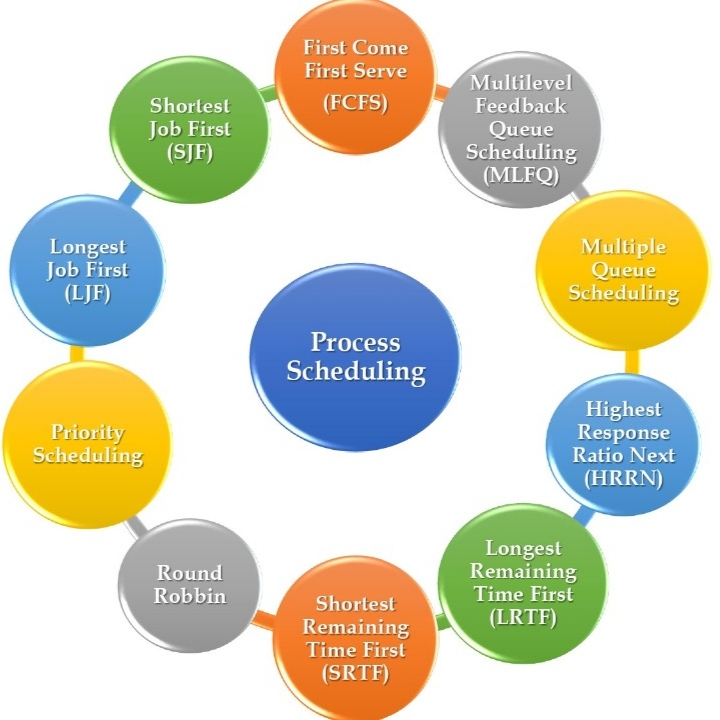

Process Scheduling
What is a Process?
In computing, a process is the instance of a computer
program that is being executed by one or many threads.
It contains the program code and its activity.
Depending on the operating system (OS),
a process may be made up of multiple threads of execution
that execute instructions concurrently.
How is Process Memory used for efficient operation?
The process memory is divided into four sections for efficient operation:
• The text category is composed of integrated program code, which is read from fixed storage when the program is launched.
• The data class is made up of global and static variables, distributed and executed before the main action.
• Heap is used for flexible, or dynamic memory allocation and is managed by calls to new, delete, malloc, free, etc.
• The stack is used for local variables. The space in the stack is reserved for local variables when it is announced.
What is Process Scheduling?
Process Scheduling is the process of the process manager
handling the removal of an active process from the CPU and
selecting another process based on a specific strategy.
Process Scheduling is an integral part of Multi-programming applications.
Such operating systems allow more than one process to be loaded into
usable memory at a time and the loaded shared CPU process uses repetition time.
There are three types of process schedulers:
• Long term or Job Scheduler
• Short term or CPU Scheduler
• Medium-term Scheduler
Objectives of Process Scheduling Algorithm
• Utilization of CPU at maximum level. Keep CPU as busy as possible.
• Allocation of CPU should be fair.
• Throughput should be Maximum. i.e. Number of processes that complete their execution per time unit should be maximized.
• Throughput should be Maximum. i.e. Number of processes that complete their execution per time unit should be maximized.
• Minimum turnaround time, i.e. time taken by a process to finish execution should be the least.
• There should be a minimum waiting time and the process should not starve in the ready queue.
• Minimum response time. It means that the time when a process produces the first response should be as less as possible.
What are the different terminologies to take care of in any CPU Scheduling algorithm?
• Arrival Time: Time at which the process arrives in the ready queue.
• Completion Time: Time at which process completes its execution.
• Burst Time: Time required by a process for CPU execution.
• Turn Around Time: Time Difference between completion time and arrival time.
Turn Around Time = Completion Time - Arrival Time
• Waiting Time(W.T): Time Difference between turn around time and burst time.
Waiting Time = Turn Around Time – Burst Time
